一款基于Electron的跨平台桌面应用
赞赏
开发者首页
EasyPM是什么？
EasyPM是一款基于Electron的跨平台客户端，通过任务(issues)、项目(projects)和工时记录(time entries)等实现了对日常工作记录、管理和分析的功能。
EasyPM接入了Redmine系统，全部数据来自Redmine，在本地仅做了非Redmine系统管理的PDCA、软件设置等数据的管理。
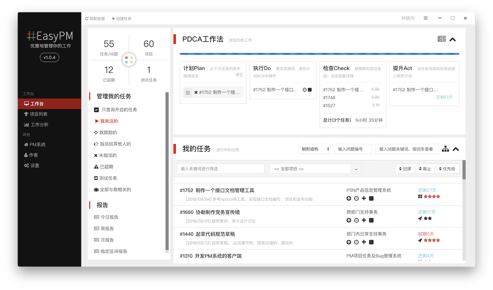
1人
开发者
158小时
1
开发时间
562次
代码提交
2个
对接系统
2
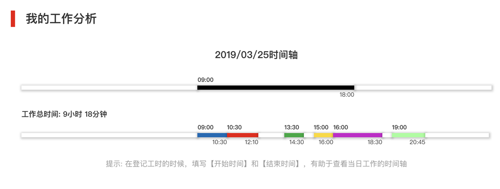
工作分析
提供日报、周报、月报或指定日期区间的报告，支持分析耗时记录并生成各类数据报表
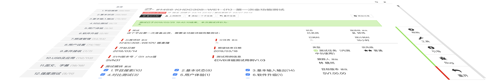
测试任务
针对测试任务进行了定制，对接了KCMS系统的测试管理模块，支持使用测试用例
4
进行管理
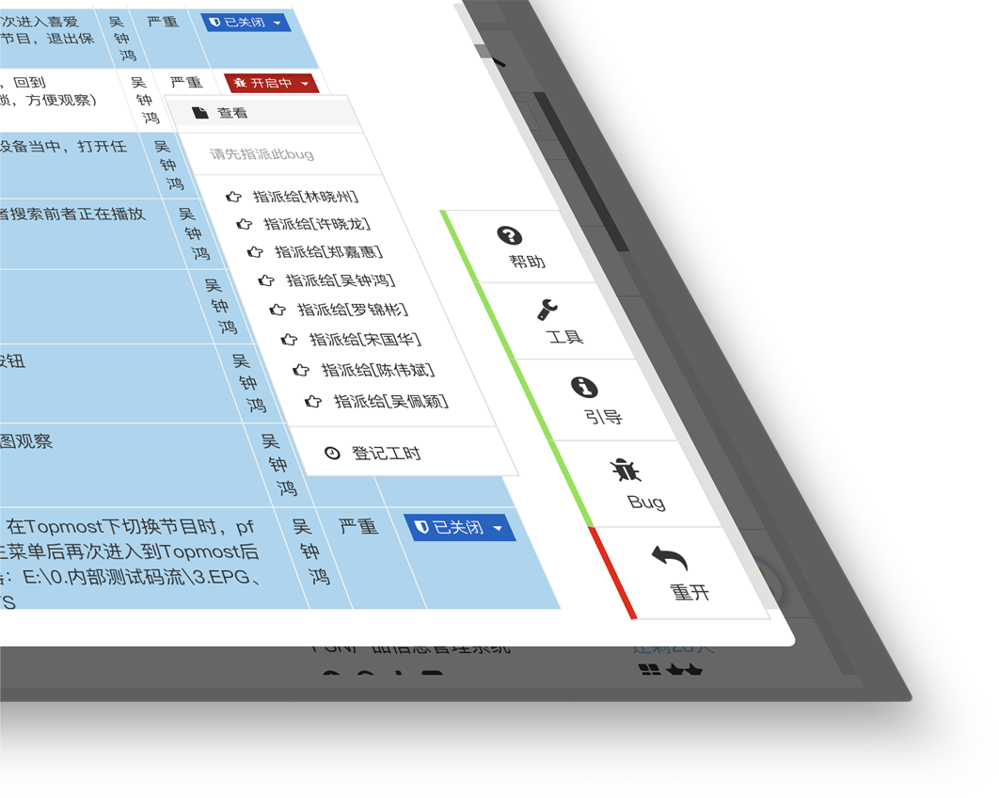
Bug管理
支持规范化管理bug列表，包括创建bug、处理bug和关闭bug，支持指派bug给其他用户
项目分析
提供项目耗时统计、主要工作统计
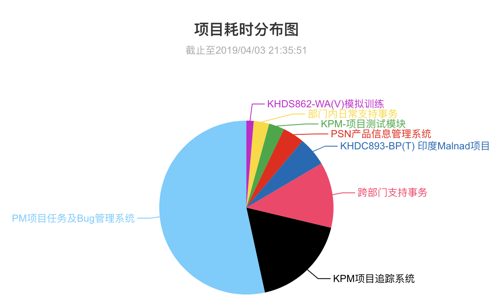
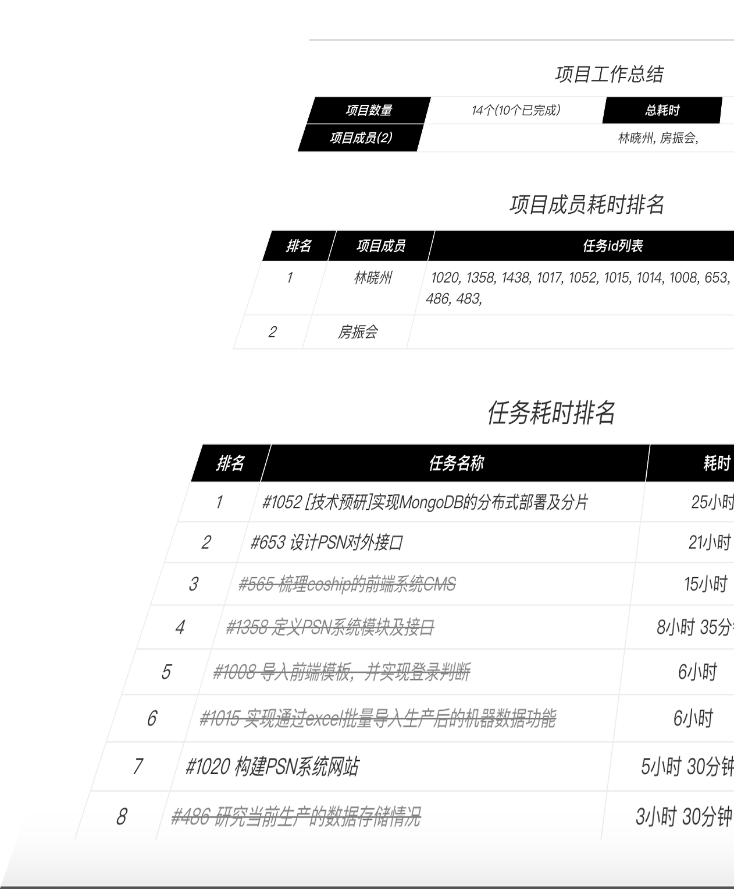
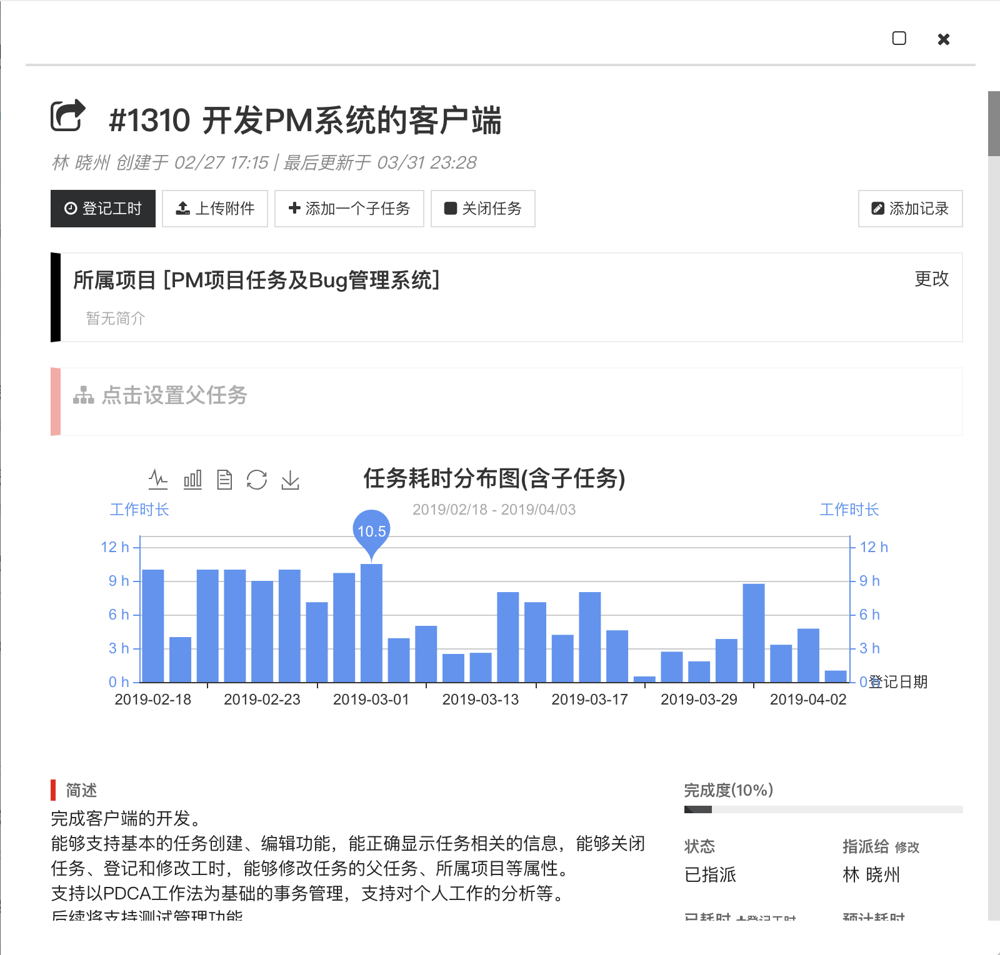
任务分析
针对耗时较多的任务进行工时分析
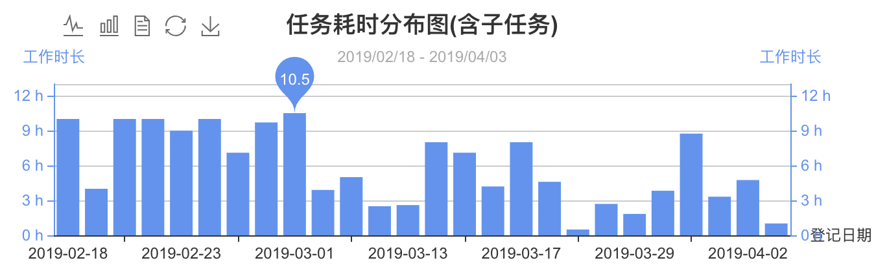
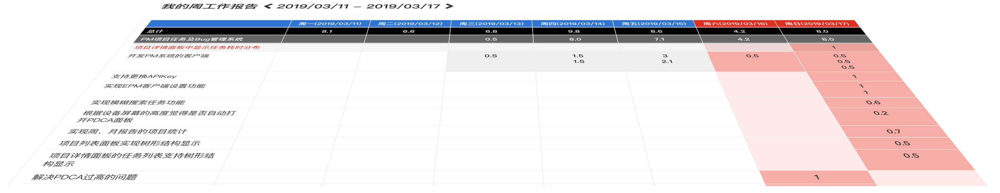
自动工作报告
每月第一次打开客户端，自动汇总上个月的工作情况；每周、每天第一次打开客户端也会汇总上周、昨天的工作
更多
PDCA
3
支持PDCA工作法，拖拽进PDCA Box的任务如果没有完成，第二天会自动列入PDCA计划中
便捷
针对Redmine操作复杂、上手困难等问题，进行了全面的优化
查询
支持按问题id查询，支持按关键词查询
多种视图
支持树形图列表、普通列表形式显示任务列表
升级检查
支持自动和手动两种方式进行软件更新检查
筛选条件
支持多种条件筛选任务：按类型、按项目、按关键词、按指派等
开发历程
启动
2019年02月
开发
2019年02月 - 04月
发布
2019年04月05日
技术亮点
Electron
使用 JavaScript, HTML 和 CSS 构建跨平台的桌面应用
Render进程
优化了KCMS客户端
5
存在的Render进程缺陷
await/async
全部采用await/async方式书写异步代码，避免『回调地狱』
移植性
设计了与网站一致的层级，IPC监听的Channel等同于网站的路由，具备良好的移植性
Logo
设计了全部Logo，并用css3实现动画效果
说明
*1.数据来源于通过EasyPM或直接登记在Redmine的工时统计
*2.对接的两个系统为：开源的Redmine系统和自主开发的项目追踪和管理系统KPM
*3.PDCA指的是: 计划（Plan）→执行（Do）→检查（Check）→调整（Action）
*4.需要Redmine系统新建一个自定义属性
*5.2019年初为深圳康佳信息网络有限公司开发的客户端，接入了公司的知识管理系统KCMS
md5{海内存知己天涯若比邻}
QUEST - LINXIAOZHOU - 2020
??
https://www.linxiaozhou.com/quest/
Go!
©2019 EasyPM · 优雅地管理你的工作 |
林晓州
出品